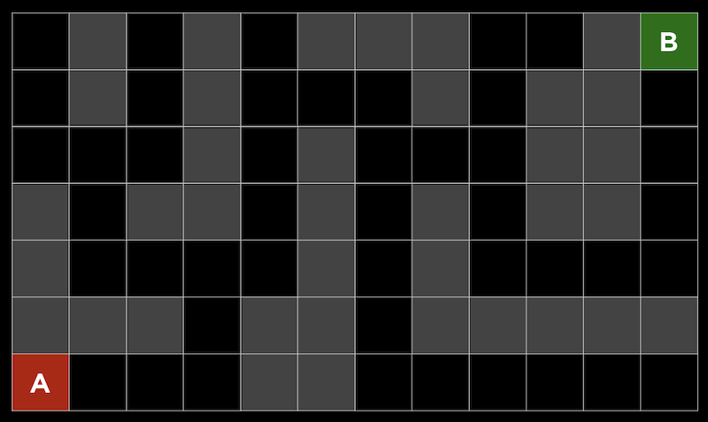
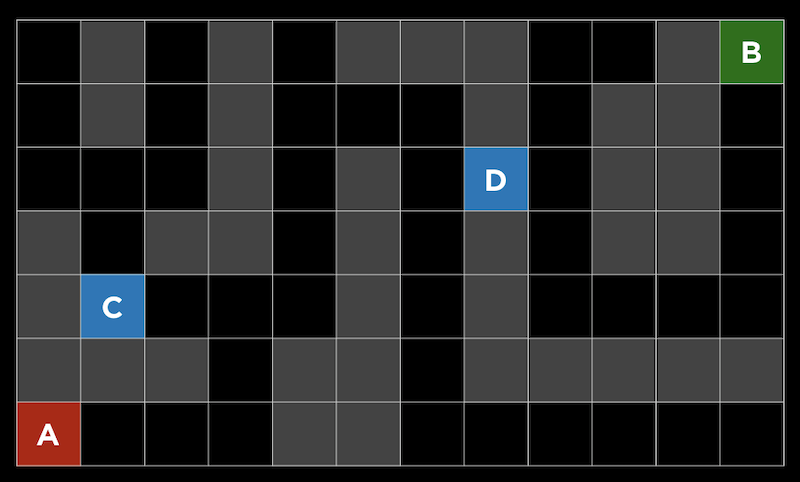
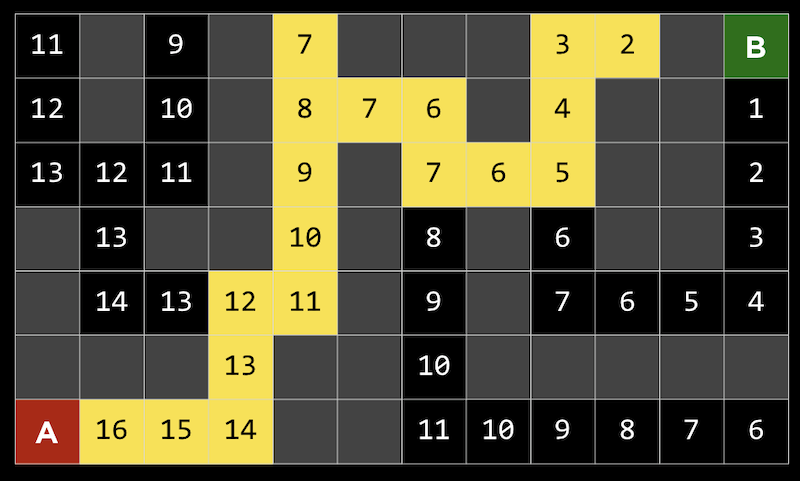
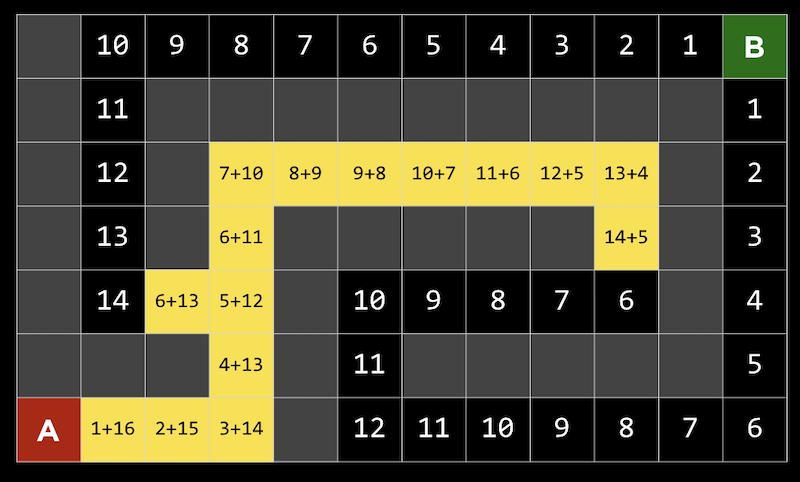
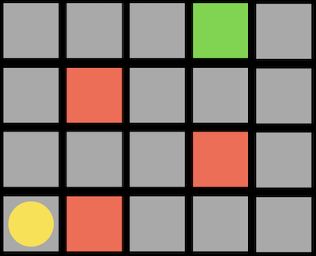
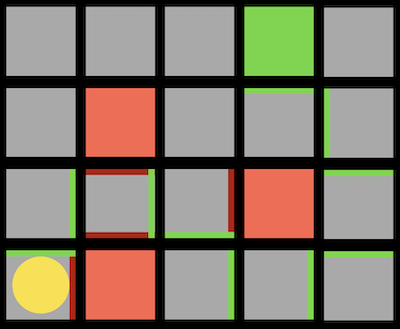

人工智能
Introduction
- 人工智能 can be described as 编程 our computers to behave intelligently, rationally, or like humans.
- For 示例, this might include the ability to play a game, like tic-tac-toe, reasoning 关于 best moves as well as future moves of an opponent.
- AI might also involve recognizing handwritten text, detecting spam emails accurately, recommending 视频 for a user based on their “观看 history”, and even generating images of humans that don’t exist.
- AI isn’t a single algorithm or principle, but a collection of approaches to problem-solving.
Decision-Making
- We might want to train a computer to make a decision well, like what move to make 下一页 in a game, whether or not an 电子邮件 is spam, or whether or not to recommend a 视频 to a user.
- Let’s consider a game where we use a paddle and a ball to break blocks:

- The computer can observe that the ball is moving to the left, and we can program the computer to move the paddle left in response, to catch the ball before it falls through to the ground.
- Decision trees can be used to represent the logic behind decisions, with 问题 being asked at each step, and further 问题 or actions based on the 答案 to each:

- We can write this in pseudocode:
while game is ongoing: if ball left of paddle: move paddle left else if ball right of paddle: move paddle right else: don't move paddle - With tic-tac-toe, we might ask “Can I get 3 in a row on this turn?”. If so, we should play that. Otherwise, we can ask “Can my opponent get 3 in a row on 下一页 turn?”, and play in that square to block them if so. But if neither of those conditions are true, it’s unclear what we should program the computer to do.
- It turns out that we can use a 更多 generic algorithm for the computer to make an optimal decision.
- Minimax is a game-playing algorithm where every outcome has a value or score, and each player is either trying to maximize or minimize the score.
- For 示例, in tic-tac-toe with two players, X and O, we have three possibilities:
- The player for O wins, to which we can assign a value of -1
- Neither player wins, to which we can assign a value of 0
- The player for X wins, to which we can assign a value of 1
- Now, player X will want to maximize the final value, while player O will want to minimuze the final value.
- A game that hasn’t ended can still be scored based on the best moves each player can make. For 示例, a game where it is X’s turn, and X can win, has a value of 1.
- In a 更多 ambigious game, the computer will have to consider each possibility with a game tree:

- Since it is O’s turn, O can make a move in either of two positions, and then X will make the final move.
- Once the game is over, a score can be assigned to each possible move, as well as the move that leads to those outcomes.
- With bigger trees, a computer can represent 更多 states and consider all possible moves, with recursive pseudocode that might look like this:
if player is X: for all possible moves: calculate score for board choose move with highest score else: for all possible moves: calculate score for board choose move with lowest score - One problem with this approach is that there might be too many moves to compute in a game. Tic-tac-toe only has 255,168 possible games, but chess has 关于 288 billion possibilities, even after the first four moves. Considering all moves, the lower bound of possible games is on the order of \(10^{29000}\).
- We can improve our minimax algorithm by limiting the paths or branches we follow. In depth-limited minimax, an evaluation function is used to estimate the expected value for a limited number of moves, so the algorithm can make a decision in a reasonable amount of 时间.
搜索
- The minimax algorithm is one type of 搜索 algorithm, where the goal is to find the 下一页 move in a game or solution to some problem.
- One problem might be finding a path through a maze, or finding a route between two places in the real 世界 given a map.
- We can consider a maze where we are trying to get from point A to point B. The gray squares indicate walls, and the black squares indicate possible paths:

- One strategy, depth-first 搜索, might be following a possible path, choosing randomly if a choice needs to be made, and going backwards only if there are no 更多 choices possible.
- In our maze, we can go down the path until we see the first fork, randomly choosing left since we have no other information available to us, and continue until we reach a dead end. Then, we’ll return to the 上一页 fork, and follow a different path. This will repeat until we reach the goal.
- One problem with this algorithm is that it takes too long, since it considers all paths in an area before it can go 返回 to the beginning and go in a different direction. Another problem is that the route it finds might not be the most efficient, since the random choices can lead to a longer path.
- Breadth-first 搜索 is an algorithm where we alternate taking each path, one step at a 时间, like searching outwards from the starting point. This will lead to finding the shortest possible path, but also explore many unnecessary paths.
- Both of these 算法 are categorized as uninformed 搜索, where the 算法 don’t have additional information 关于 the problem, apart from the very 下一页 steps they can make.
Heuristics
- In informed 搜索, we use knowledge 关于 the problem to find solutions 更多 efficiently with heuristics, some way of estimating solutions.
- For 示例, in this maze, we might estimate that square D is better than square C, since the distance between B and D “looks” smaller than the distance between C and D:

- In a maze, this heuristic is called the Manhattan distance, where we can count the number of squares vertically and horizontally between two squares, ignoring any walls in between:

- With this additional information, we can make choices at each fork that are likely to be better.
- Greedy best-first 搜索 will, at each fork in the road, pick the path with the best value, which will be the lowest Manhattan distance in this case. Since the distance is easy to compute for any given square, we can label each one:

- Here, we see that the algorithm takes the path towards the best value at each fork. At the square with a value of 8, it took the left path since both possibilities had a value of 7, and since that was a dead end, it went 返回 to the other path. but at the end reached a wall. So it will go backwards and take the 下一页 fork at the square with a value of 5, which will eventually lead us to the goal.
- Our algorithm would only be calculating the heuristic for each square as it reaches them, but we’ve labeled all of them here to make them easier to visualize.
- But even this algorithm might not find the most efficient path, since at first an inefficient path might look like a good choice:

- Here, the first fork either goes to the left or up, and even though our goal is on the top right, the path going to the left actually ends up being shorter.
- A* 搜索, pronounced “A star 搜索”, uses both the heuristic value of the path, as well as the distance it has already gone for that path.
- In our 示例 above, we can calculate that value at each step:

- At the first step, for 示例, we took one step and the square has a Manhattan distance of 16 from the goal, so the total value is 1+16. We repeat this, but eventually see that we could either be approximately 6 steps away, having taken 15 steps already (far right), or be 13 steps away, but only after taken 6 steps (far left).
- So now we should go down the left path for a 更多 efficient solution.
- A* 搜索 will be optimal if we have an accurate heuristic. Ideally the heuristic is quick to calculate, so the 搜索 can be efficient overall.
Reinforcement Learning
- One type of 机器学习, where a computer can essentially learn from its experiences, is called reinforcement learning, which allows a computer to learn whether its actions at each step were positive or negative.
- For 示例, consider a game where a player has to move to a goal, but if it encounters an obstacle (invisible to the player), then the game ends:

- Here, the player is the yellow circle, trying to move to the green block, with red obstacles in the map.
- After each step, the computer learns which directions it can safely move in, and which ones will cause it to lose:

- The red lines indicate directions that the computer has learned to avoid, and green lines indicate directions that it has learned are safe.
- Given enough attempts at this game, the computer will have figured out which sequence to take to the goal.
- We can see that this algorithm is inefficient in finding the best path, too, so we want it to both explore, or try new actions, and exploit, or use actions it has done before that are safe.
- This tradeoff might be done randomly:
epsilon = 0.10 if random() < epsilon: make a random move else: make the move with the highest value- With some probability, in this case 10%, our algorithm will explore, or make a random choice.
- We take a look at an 示例 of a robot learning how to flip pancakes, where its attempts failed over and over, until it eventually figured out how to move the pan.
Genetic 算法
- Another approach is inspired by nature, where the most fit organisms survive and evolve over 时间. With genetic 算法, many 算法 are created to try to solve some problem, and even though they might not be successful, the best ones will be mutated, or randomly changed, until we have a sufficiently good algorithm.
- In pseudocode, we might have:
make initial generation of candidates randomly repeat until successful: for each candidate: calculate candidate's fitness remove least fit candidates make new generation from remaining candidates - We see another 示例 with a simulation of cars in a map, where many of them start and crash into walls right away, but some are using the sensors to avoid walls. And after enough generations of random changes to the best candidates, or the ones that drove the furthest, we end up with cars that can go very far without crashing.
- These 算法 might reach some bottleneck, or local maximum, where they can no longer be improved by random mutations, and only some other totally different 算法 can be better.
- Another application of these 算法 is in 视频 recommendations, where a recommended 视频 that is watched can be taken as positive reinforcement.
Neural Networks
- In the human brain, neurons pass signals to one another to perform computations. A neural network is a collection of neurons, and we can simulate them digitally as well. We can have some number of neurons, or units, storing some value and performing some calculation on it before passing it along.
- We can even have layers of units, each of which performing some calculation on its inputs, before passing its outputs on to the 下一页:

- Deep learning refers to the use of these neural networks, combined with linear algebra, to solve some problem. Given enough input data, these neural networks can be trained to set its values and calculations to translate some inputs into outputs.
- One application is handwriting recognition. After we label many images of handwritten digits with their actual value, we can train a neural network to recognize new images.
- Similarly, emails can be labeled as legitimate or spam, and a neural network can learn to determine which category to place new emails into.
- The key to these 算法 is a large amount of data, so these neural networks can be 更多 accurate.
- Images of humans can be generated with neural networks as well. At first, it might only be able to generate a small number of pixels. Then, given that image as input, it can add 更多 details that are closer to images of humans, and eventually a convincing image can be generated.
- One concern with 机器学习 is that there isn’t a lot of interpretability, or ability for humans to understand what the neural network is doing to come up with its outputs.